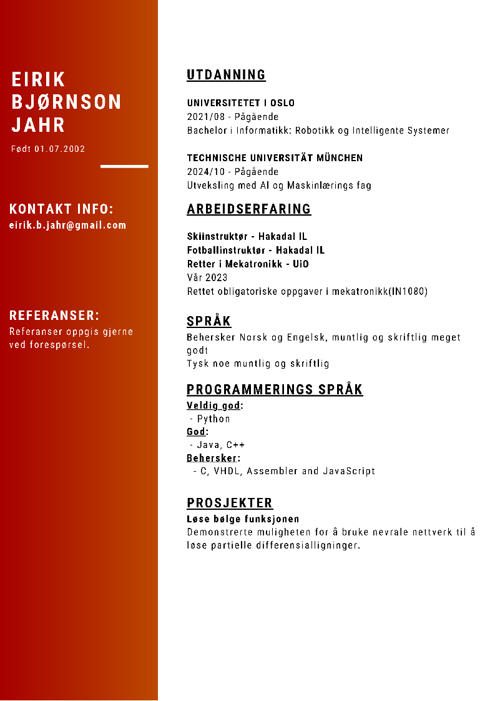

Eirik B. Jahr
CV
Projects
Game console
Purpose: The console was created as part of a student competition named "shitty party game."
Physical Design: It features a 3D printed shell and buttons, integrating LED lights for displaying game modes and enhancing interactivity.
Control and Programming: The console is powered by an Arduino Uno, which makes it programmable and versatile for different game implementations.
Capacity and Games: It can accommodate up to six players and includes three different games: one memory game and two reaction games.
Autonomus Drone
Purpose: Making an autonomous drone to navigate and perform tasks without human intervention.
Physical Design: Drone with two cameras for depth perception and obstacle avoidance.
Control and Programming:
Capacity and Games: